vpp node相关
Table of Contents
1. node类型
vlib 包处理应用会定义一组graph node来处理包。
vlib_node_registration_t 结构通常通过 VLIB_REGISTER_NODE 宏来构造。在运行时，框架将这些注册的node处理成directed graph （有向图）。在运行时，很容易就可以添加node到graph，但是不支持删除。
vlib提供了一些类型的 vector-processing 的graph nodes，主要用于控制框架的行为。
- VLIB_NODE_TYPE_PRE_INPUT
- 在所有其他node类型之前运行
- VLIB_NODE_TYPE_INPUT
- 在 PRE_INPUT 后运行
- VLIB_NODE_TYPE_INTERNAL
- 只有在添加了待处理 frames 时，显式设置运行
- VLIB_NODE_TYPE_PROCESS
- 显式的设置运行。“process” nodes 是多任务协程，必须在合理短时间内停止运行。
为了更好地理解图节点调度程序，请阅读./src/vlib/main.c:vlib_main_loop。
typedef enum { /* An internal node on the call graph (could be output). */ VLIB_NODE_TYPE_INTERNAL, /* Nodes which input data into the processing graph. Input nodes are called for each iteration of main loop. */ VLIB_NODE_TYPE_INPUT, /* Nodes to be called before all input nodes. Used, for example, to clean out driver TX rings before processing input. */ VLIB_NODE_TYPE_PRE_INPUT, /* "Process" nodes which can be suspended and later resumed. */ VLIB_NODE_TYPE_PROCESS, VLIB_N_NODE_TYPE, } vlib_node_type_t;
2. node的定义
2.1. 数据结构
2.2. VLIB_REGISTER_NODE
node定义后，在启动程序时，由构造函数进行初始化，这是通过gcc的 __attribute__((__constructor__)) 属性来实现，在main函数之前执行。
#define VLIB_REGISTER_NODE(x, ...) \ __VA_ARGS__ vlib_node_registration_t x; \ static void __vlib_add_node_registration_##x (void) \ __attribute__ ((__constructor__)); \ static void __vlib_add_node_registration_##x (void) \ { \ vlib_global_main_t *vgm = vlib_get_global_main (); \ x.next_registration = vgm->node_registrations; \ vgm->node_registrations = &x; \ } \ static void __vlib_rm_node_registration_##x (void) \ __attribute__ ((__destructor__)); \ static void __vlib_rm_node_registration_##x (void) \ { \ vlib_global_main_t *vgm = vlib_get_global_main (); \ VLIB_REMOVE_FROM_LINKED_LIST (vgm->node_registrations, &x, \ next_registration); \ } \ __VA_ARGS__ vlib_node_registration_t x
宏定义展开后：
/** dpdk_input_node 的定义 */ VLIB_REGISTER_NODE (dpdk_input_node) = { .type = VLIB_NODE_TYPE_INPUT, .name = "dpdk-input", .sibling_of = "device-input", .flags = VLIB_NODE_FLAG_TRACE_SUPPORTED, /* Will be enabled if/when hardware is detected. */ .state = VLIB_NODE_STATE_DISABLED, .format_buffer = format_ethernet_header_with_length, .format_trace = format_dpdk_rx_trace, .n_errors = DPDK_N_ERROR, .error_strings = dpdk_error_strings, }; /** 宏定义展开后 (dpdk-input-node) */ /** dpdk_input_node 变量声明 */ vlib_node_registration_t dpdk_input_node; /** 函数声明：注册dpdk_input_node， 利用gcc的构造属性，使其先于main函数执行 */ static void __vlib_add_node_registration_dpdk_input_node(void) __attribute__((__constructor__)); /** 函数定义 */ static void __vlib_add_node_registration_dpdk_input_node(void) { vlib_global_main_t *vgm = vlib_get_global_main(); /** 利用 node 结构的 next_registration 将所有node串成一个链表 */ dpdk_input_node.next_registration = vgm->node_registrations; vgm->node_registrations = &dpdk_input_node; } /** 函数声明： 从vlib_main_t 结构的链表中移除该node， 在main函数运行后调用(析构函数) */ static void __vlib_rm_node_registration_dpdk_input_node(void) __attribute__((__destructor__)); /** 函数定义 */ static void __vlib_rm_node_registration_dpdk_input_node(void) { vlib_global_main_t *vgm = vlib_get_global_main(); VLIB_REMOVE_FROM_LINKED_LIST(vgm->node_registrations, &dpdk_input_node, next_registration); } /** node的定义 */ vlib_node_registration_t dpdk_input_node = { .type = VLIB_NODE_TYPE_INPUT, .name = "dpdk-input", .sibling_of = "device-input", .flags = VLIB_NODE_FLAG_TRACE_SUPPORTED, /* Will be enabled if/when hardware is detected. */ .state = VLIB_NODE_STATE_DISABLED, .format_buffer = format_ethernet_header_with_length, .format_trace = format_dpdk_rx_trace, .n_errors = DPDK_N_ERROR, .error_strings = dpdk_error_strings, }
- 利用 VLIB_REGISTER_NODE(x,…) 定义node后，会生成:
- 构造函数： static void \__vlib_add_node_registration_nodename(void); ，利用gcc __attribute__ ((constructor)) 属性修饰， 会在main函数执行之前被调用。
- 析构函数： static void \__vlib_rm_node_registration_nodename(void); ，利用gcc __attribute__ ((destructor)) 属性修饰， 会在main函数结束后被调用。
- node结构： vlib_node_registration_t node名称; 。
- 函数的功能是利用node自身的 next_registration 成员以及 vlib_global_main.node_registrations 将所有node串成一个链表。
构造函数初始化完成后，vlib_global_mian结构的node_registrations成员作为链表头，保存了所有定义的node。
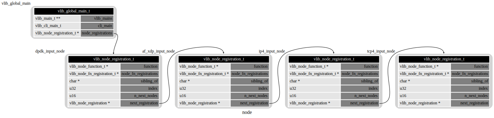
2.3. VLIB_NODE_FN
VLIB_NODE_FN用于定义 vlib_node_registration_t 结构中的 function（node的处理函数） 成员。
注意：如果使用VLIB_NODE_FN定义node的function时， 定义node时的function成员必须为NULL。
#define VLIB_NODE_FN(node) \ uword CLIB_MARCH_SFX (node##_fn) (vlib_main_t *, vlib_node_runtime_t *, \ vlib_frame_t *); \ static vlib_node_fn_registration_t CLIB_MARCH_SFX ( \ node##_fn_registration) = { \ .function = &CLIB_MARCH_SFX (node##_fn), \ }; \ \ static void __clib_constructor CLIB_MARCH_SFX (node##_multiarch_register) ( \ void) \ { \ extern vlib_node_registration_t node; \ vlib_node_fn_registration_t *r; \ r = &CLIB_MARCH_SFX (node##_fn_registration); \ r->march_variant = CLIB_MARCH_SFX (CLIB_MARCH_VARIANT_TYPE); \ r->next_registration = node.node_fn_registrations; \ node.node_fn_registrations = r; \ } \ uword CLIB_MARCH_SFX (node##_fn)
/** dpdk_input_node_fn 的定义 */ VLIB_NODE_FN(dpdk_input_node) (vlib_main_t *vm, vlib_node_runtime_t *node, vlib_frame_t *f) { //... } /** 宏定义展开 */ uword dpdk_input_node_fn(vlib_main_t *, vlib_node_runtime_t *, vlib_frame_t *); static vlib_node_fn_registration_t dpdk_input_node_fn_registration = { .function = &dpdk_input_node_fn, }; static void __clib_constructor dpdk_input_node_multiarch_register(void) { /** * 在使用VLIB_NODE_FN注册function时， node中的function成员必须为NULL, * 在调用register_node时, 先检查是否初始化了node中的node_fn_registrations * 成员(使用VLIB_NODE_FN宏定义注册) */ extern vlib_node_registration_t dpdk_input_node; vlib_node_fn_registration_t *r; r = &dpdk_input_node_fn_registration; r->march_variant = CLIB_MARCH_VARIANT_TYPE_??/* 处理器架构相关 */; r->next_registration = node.node_fn_registrations; node.node_fn_registrations = r; } uword dpdk_input_node_fn(vlib_main_t *vm, vlib_node_runtime_t *node, vlib_frame_t *f) {......}
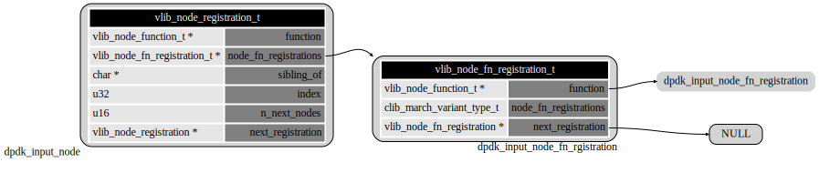
3. node之间的关系
sibling_of含义： sibling_of 代表同一层级的node，共享sibling_of指向的next_nodes。
如果定义了sibling_of，则不能定义next_nodes，因为sibling_of指向的node已经定义了next_nodes。例如 dpdk_input_node->sibling_of = "device-input"， device_input_node中定义了next_nodes。
next_nodes含义： 可以转发到的哪些node。
3.1. devide-input
此类型node用于各种驱动从对应的设备接收数据包，设备可以是物理网卡、虚拟网卡、tuntap设备、xdp等。
所有和 device-input 关联的node，共享device-input的next_nodes。
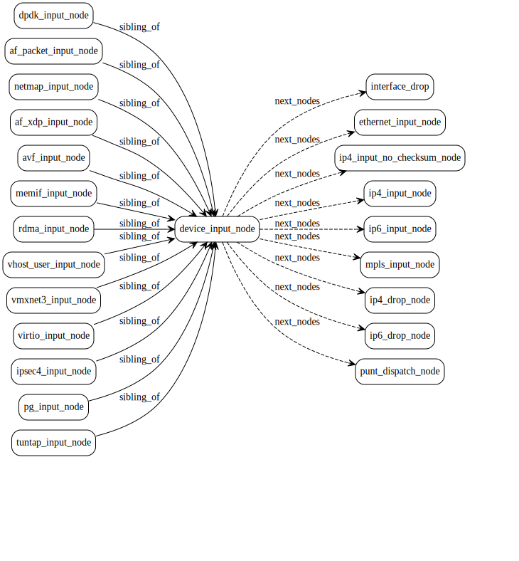
3.2. ethernet_input
用于处理以太网数据包。
pipe_rx_node和ethernet_input为sibling关系。
ethernet_register_input_type函数可以动态向ethernet_input_node添加next_nodes。(同时也会添加到sibling node的next_nodes)。
如果是三层输入节点，则同时初始化ethernet_main_t的对应类型的三层输入节点（l3_next），例如：input_next_ip6。
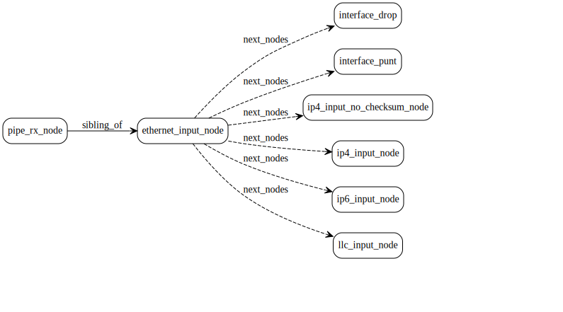
3.3. ip4_input
用于处理ipv4数据报。
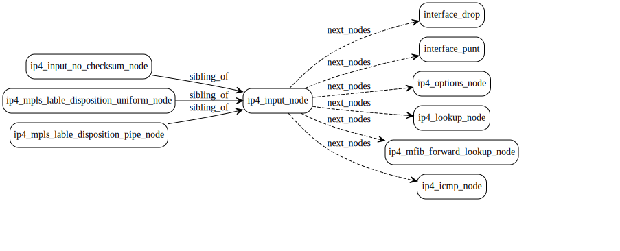
4. node的注册
4.1. 数据结构关联
typedef struct { /** 保存所有node的指针，通过下标索引 */ vlib_node_t **nodes; /** hash表，通过node名称索引 */ uword *node_by_name; /** 以node类型为维度保存不同类型的node（缓存局部性） 不适用VLIB_NODE_TYPE_INTERNAL类型. */ vlib_node_runtime_t *nodes_by_type[VLIB_N_NODE_TYPE]; /** Node runtime indices for input nodes with pending interrupts. */ void *interrupts; volatile u32 *pending_interrupts; /* Input nodes are switched from/to interrupt to/from polling mode when average vector length goes above/below polling/interrupt thresholds. */ u32 polling_threshold_vector_length; u32 interrupt_threshold_vector_length; /* Vector of next frames. */ vlib_next_frame_t *next_frames; /* Vector of internal node's frames waiting to be called. */ vlib_pending_frame_t *pending_frames; /* Timing wheel for scheduling time-based node dispatch. */ void *timing_wheel; vlib_signal_timed_event_data_t *signal_timed_event_data_pool; /* Opaque data vector added via timing_wheel_advance. */ u32 *data_from_advancing_timing_wheel; /* CPU time of next process to be ready on timing wheel. */ f64 time_next_process_ready; /* Vector of process nodes. One for each node of type VLIB_NODE_TYPE_PROCESS. */ vlib_process_t **processes; /* Current running process or ~0 if no process running. */ u32 current_process_index; /* Pool of pending process frames. */ vlib_pending_frame_t *suspended_process_frames; /* Vector of event data vectors pending recycle. */ void **recycled_event_data_vectors; /* Current counts of nodes in each state. */ u32 input_node_counts_by_state[VLIB_N_NODE_STATE]; /* Per-size frame allocation information. */ vlib_frame_size_t *frame_sizes; /* Time of last node runtime stats clear. */ f64 time_last_runtime_stats_clear; /* Node index from error code */ u32 *node_by_error; /* Node Function Variants */ vlib_node_fn_variant_t *variants; /* Node Function Default Variant Index */ u32 node_fn_default_march_variant; /* Node Function march Variant by Suffix Hash */ uword *node_fn_march_variant_by_suffix; } vlib_node_main_t;
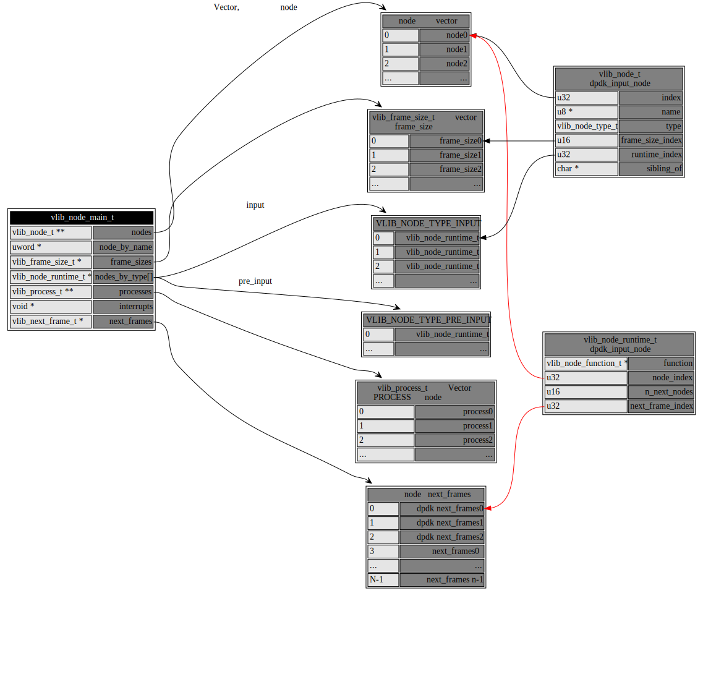
4.2. 注册过程
使用函数 register_node() 函数对node进行注册。
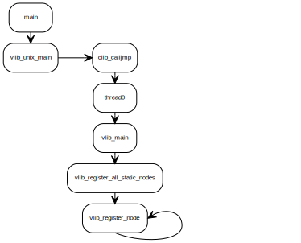
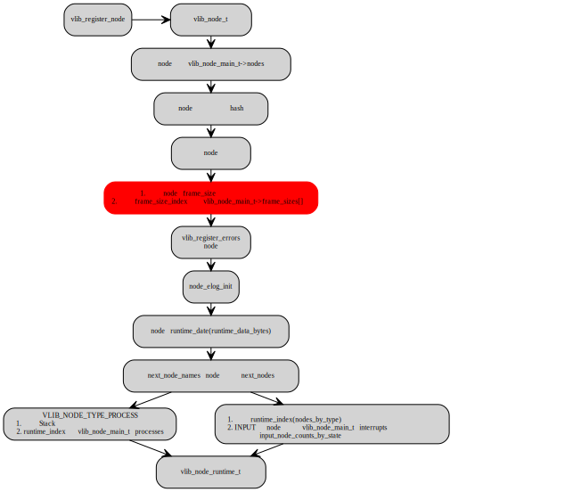
4.3. node关联关系初始化
vlib_node_main_init 函数中初始化各个node之间的关联关系。
- sibling_of关联
- 获取sibling_of标识的node,
- 将本node index保存至同级node(属于同一个sibling_of)的sibling_bitmap中
- 将同级node的index保存至本node的sibling_bitmap中
- 将本node 和 所属 sibling_of的node互相关联
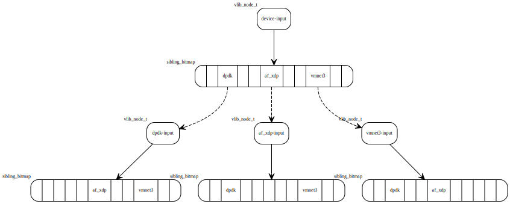
- node和next_node的关联
- 将next_node_names 名称解析为索引, 保存至 vlib_node_t 中的 next_nodes成员中
- 同时，将所有兄弟node的next_nodes也进行初始化（所有sibling node共享next__nodes）
- 将next node的prev_node_bitmap初始化，和上一级node建立关联关系
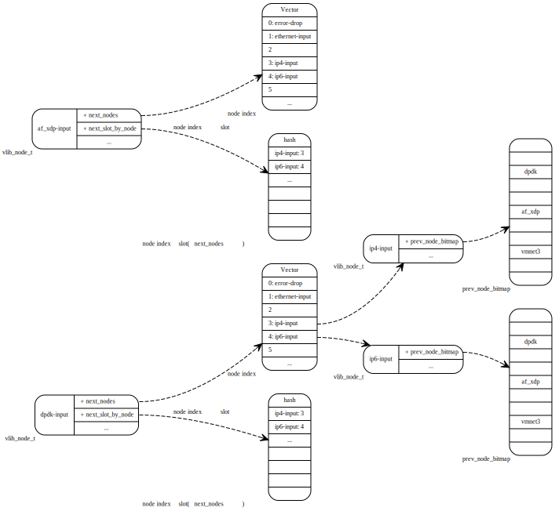
5. Graph node 调度
Vlib_main_loop() 执行 graph nodes 的调度。
工作原理： input node 生成 work vector 用于处理（例如dpdk或者af_xdp等input node收到数据包）， graph node 调度器通过有向图将 worker vector 推送，直到原始的 work vector 被完全处理。之后重复该过程。
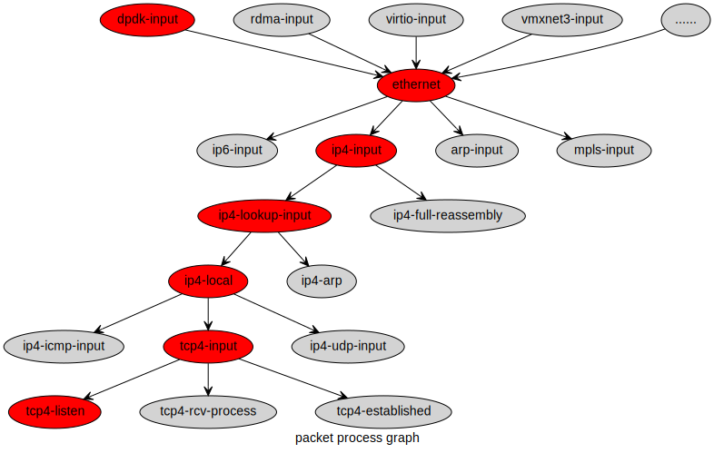
graph node调度器允许通过epoll定时器来触发。
graph node 调度器使用了分层的时间轮，当定时器到期时重新调度 node。